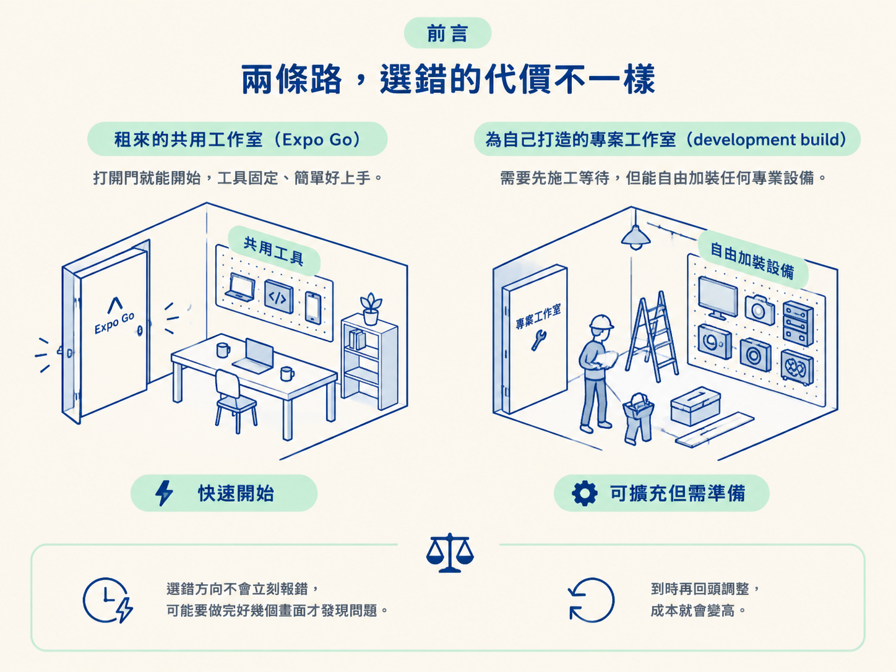

完成這一節後，你應該能在動手前判斷 app 適合使用 Expo Go，還是需要 development build，並清楚說出判斷依據：功能清單裡，是否出現 Expo Go 內建不了的 native module。
上一節我們看過 Expo 這條工具鏈，也知道 Expo Go 只是其中一個練習容器。現在問題來了：你的 app 到底該用 Expo Go，還是該先做一個 development build？
這不是單純的工具偏好，而是真正會影響開發路線的抉擇。Expo Go 很快，幾乎不用設定，手機掃一下 QR code 就能看到畫面；development build 則需要先建置，第一次等待時間較長，也會把原生專案準備好。
但兩者交換的東西不同：選 Expo Go，是優先取得開發速度；選 development build，則是換取更完整的原生能力，以及更接近實際上架版本的環境。麻煩的是，選錯時通常不會一開始就報錯。你可能已經完成好幾個畫面，接到某項功能時才發現它根本無法在 Expo Go 裡執行，這時再回頭調整，成本就高了。
| 面向 | Expo Go | development build |
|---|---|---|
| 它是什麼 | Expo 提供的通用 app，掃描 QR code 就能執行專案 | 為你的專案量身建置的 standalone app |
| 怎麼取得 | 在手機安裝 Expo Go，執行 expo start | 安裝 expo-dev-client，再執行 npx expo run ios |
| 能不能安裝原生模組 | 不能，只能使用 Expo Go 內建的原生模組 | 可以安裝任何 native module |
| 開發速度 | 快，只修改 JavaScript 時幾乎能即時看到結果 | 第一次建置較慢；之後只修改 JavaScript 時，同樣能快速更新 |
| 適合的情境 | 學習、測試，以及純 JavaScript 的 demo | 準備上架的真實專案，以及需要原生能力的功能 |
可以把 Expo Go 想成一間已經配好工具的練習教室：常見的東西都有，但你不能任意把新的設備搬進來。development build 則比較像是為自己的專案打造工作室，需要多花時間準備，卻能加入專案真正需要的原生工具。

因此，兩者的分界不是「簡單」對上「困難」，而是你的 app 有沒有需要跨過 JavaScript 與 native 之間的界線。Expo Go 適合學習與測試；當你要做真正的應用，尤其需要 Expo Go 沒有內建的功能時，就需要 development build。
你不必背一長串情境。開始動工前，先問自己以下三個問題：
三個問題最後都會回到同一個判準：功能清單裡，有沒有 Expo Go 內建不了的原生能力？
如果有，development build 就不是「要不要」的偏好，而是接下來必須採用的開發環境。如果目前全是純 JavaScript 畫面，則可以先用 Expo Go 起步。
「需要原生能力就用 development build」是很實用的規則，但不能把它誤讀成「只要是要上架的專案，第一天就一定要完成 dev build」。以下幾種情況，會讓切換時機有所不同。
第一種情況是：你目前還沒有要使用原生功能。課程本身就是先在 Expo Go 裡執行，等到需要接上 native module 時，再轉移到 development build。也就是說，若你打算先慢慢完成純畫面，可以先用 Expo Go；真正的切換時機，是第一次需要原生能力的時候。
第二種情況是：套件明明裝了，功能卻沒有生效。這是很常見的誤判。你可能以為安裝套件、重新載入畫面就夠了，但新增 native module 改變的是 app binary 的組成；純 JavaScript 的熱更新不會把新的原生碼帶進目前的 app。因此，你必須重新建置。
這項限制不是 Expo Go 特有的問題，使用 development build 的專案也一樣適用。下一節會進一步拆解這個機制，說明重建究竟重建了什麼，以及哪些修改可以只靠熱更新完成。
第三種情況是：你選對了 development build，卻在模擬器裡測不到結果。像相機這類功能，模擬器通常沒有真實硬體可以使用。因此，即使 app 已經是 development build，某些功能仍然要用真機驗證才準確。這不會改變工具的選擇，但會改變你的測試方式。
如果功能清單裡出現一個 Expo Go 內建不了的 native module，就使用 development build；如果目前只有純 JavaScript 的畫面、狀態和假資料，先用 Expo Go 起步最快。無論選哪一個，新增 native module 後都要重新建置，不能期待熱更新把新的原生碼帶進 app。
請在自己的 app 上做最後確認：
下一節會接著回答一個關鍵問題：為什麼新增 native module 一定要重建？這不是 Expo 特別訂下的規矩，而是 JavaScript 與 native 分層後自然產生的結果。理解這個機制，你就會知道重建到底改變了什麼，也能分辨哪些修改可以只靠熱更新完成。